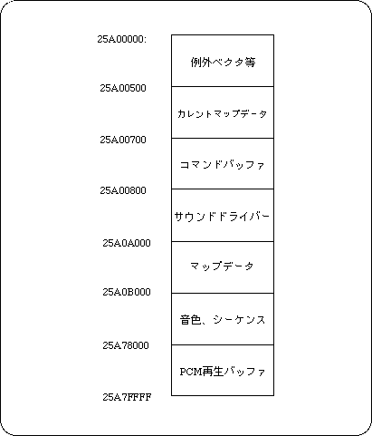

Return to previous page | Return to menu | Go to next page
The memory map of the sound CPU is roughly as follows. If the PCM stream is not used, the PCM playback buffer is not required, so it can be used for sequence data.
